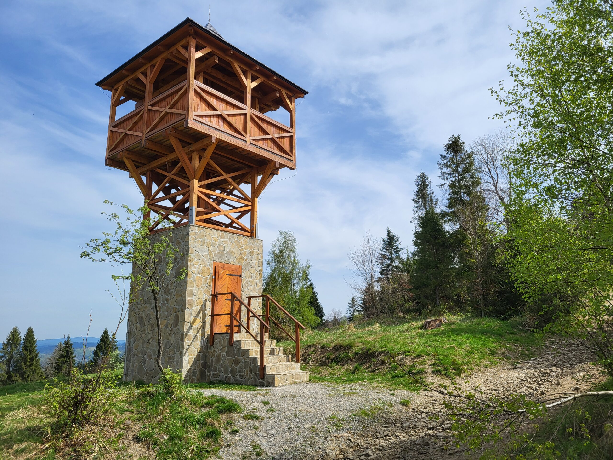
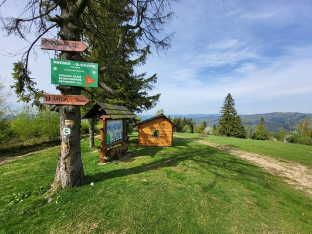
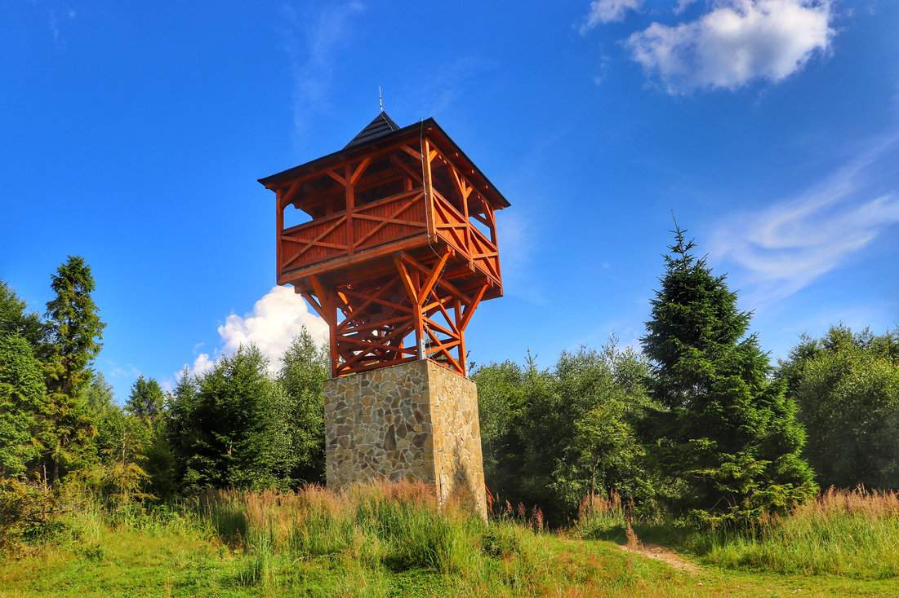

Drevená rozhľadňa pri Oščadnici v krásnej prírode. Prídete sem z obce Oščadnica, ale aj zo železničnej zastávky Oščadnica, okolo Čarovnej lúky. Ďalšie turistické trasy sem vedú z Krásna nad Kysucou, Kalinova a Veľkej Rače. V blízkosti rozhľadne si môžete opiecť špekáčiky, alebo slaninku na pekne vybudovanom verejnom ohnisku s prístreškom, stolmi a lavicami. Táto moderná rozhľadňa z roku 2021, navrhnutá architektom Stanislavom Mikovčákom, ponúka nádherné výhľady na Oščadnickú dolinu a okolitá mestá. Prístupná je celoročne. Vysoká je 10 metrov a nachádza sa v CHKO(Chánená krajinná oblasť).
  
041/70 79 460
oscadnica@oscadnica.sk
Zdroje: https://www.oscadnica.sk https://turisticky.sk https://www.google.com/maps https://mapy.com https://szlakowe.pl